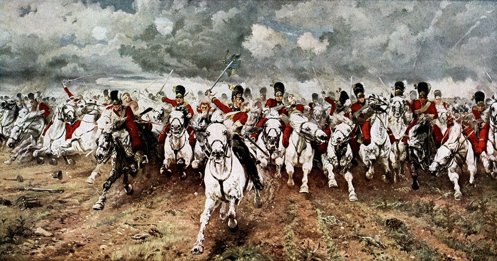
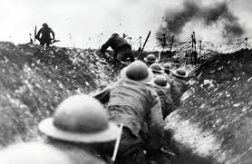
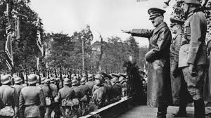
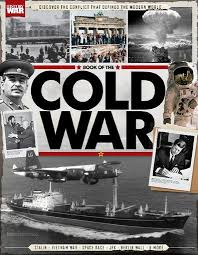

The term "war" refers to a state of armed conflict between different groups, typically involving organized military forces. war is defined as "a state of usually open and declared armed hostile conflict between states or nations."
In a broader sense, war can also denote any prolonged conflict or struggle between opposing forces or groups, not limited to military engagements.
Sociologists and political scientists often view war as an institution governed by social norms or legal frameworks, recognizing it as a structured form of conflict between political entities.
The most importants wars
1. The Napoleonic Wars (1803–1815)
Global Impact: Widespread conflict across Europe and beyond.
Key Outcomes: The spread of revolutionary ideals and the reorganization of European territories.
Legacy: Influenced the rise of nationalism and modern warfare tactics.

2. World War I (1914–1918)
Global Impact: Approximately 10–22 million deaths.
Key Outcomes: Collapse of four major empires (Austro-Hungarian, Ottoman, Russian, and German) and the redrawing of national boundaries.
Legacy: Set the stage for World War II and significant political upheavals, including the Russian Revolution.

3. World War II (1939–1945)
Global Impact: The deadliest conflict in human history, resulting in 70–85 million deaths.
Key Outcomes: The defeat of Nazi Germany and Imperial Japan, the Holocaust, the use of atomic bombs, and the emergence of the U.S. and Soviet Union as superpowers.
Legacy: Led to the establishment of the United Nations and a new international order.

4. The Cold War (1947–1991)
Global Impact: A prolonged period of geopolitical tension between the U.S. and the Soviet Union.
Key Outcomes: Arms race, space race, and numerous proxy wars.
Legacy: Shaped international relations and led to the eventual dissolution of the Soviet Union.
